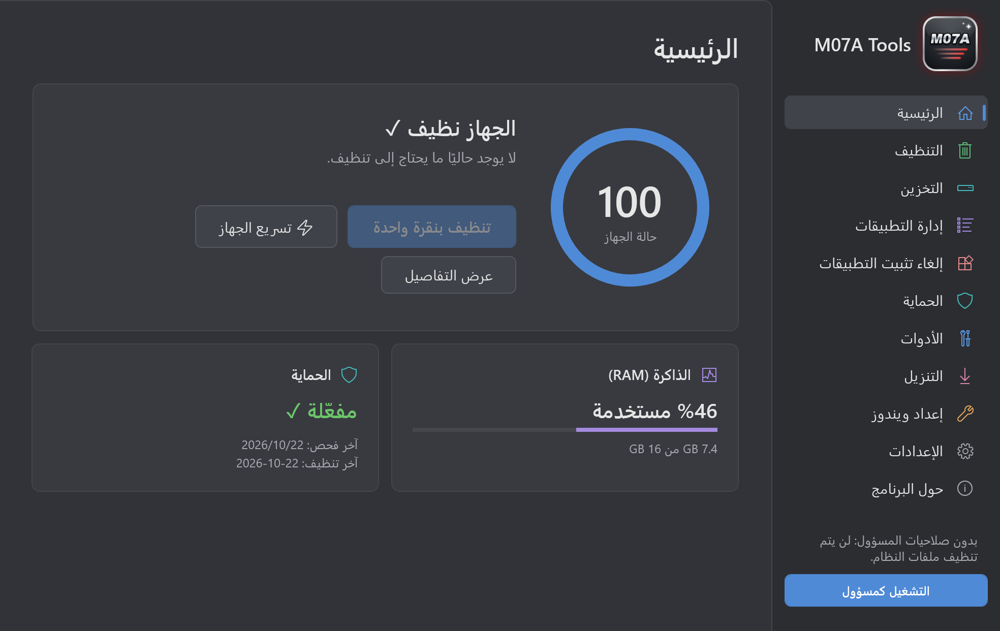

جهازك أسرع وأنظف بنقرة واحدة
أداة مجانية لويندوز تنظّف الملفات المؤقتة وذاكرة الألعاب بأمان، وتسرّع الجهاز، وتدير التطبيقات، وتفحص الفيروسات، وتنزّل الفيديوهات والأغاني، في برنامج واحد بواجهة عربية وإنجليزية.
واجهة بسيطة وهادئة
كل شيء في مكان واضح. اختر صفحة لمشاهدتها.

كل ما يحتاجه جهازك في برنامج واحد
بدل خمسة برامج مختلفة، صفحة لكل مهمة.
تنظيف آمن
الملفات المؤقتة وذاكرة الألعاب والمتصفحات، مع فحص قبل الحذف.
تسريع الجهاز
تحرير الذاكرة يدويًا أو تلقائيًا، دون المساس باللعبة المفتوحة.
إدارة التطبيقات
أوقف تطبيقات بدء التشغيل وأغلق البرامج التي تستهلك الذاكرة.
إلغاء التثبيت
كل التطبيقات المثبتة مع البحث والترتيب حسب الحجم.
الحماية
فحص الفيروسات عبر Windows Defender، وتثبيت تحديثات ويندوز.
إعداد ويندوز جديد
التعريفات الناقصة ومكونات الألعاب من مصادرها الرسمية.
أدوات الإصلاح
نقطة استعادة، وإصلاح ملفات ويندوز والشبكة وشريط المهام، ووضع الطاقة.
التنزيل
فيديوهات وأغانٍ وقوائم تشغيل كاملة بالجودة التي تختارها.
التخزين
أكبر المجلدات والملفات على كل قرص، مع حذف آمن إلى سلة المحذوفات.
طريقة التشغيل
لا يحتاج إلى تثبيت. أربع خطوات في المرة الأولى فقط.
فك الضغط
انقر بزر الماوس الأيمن على الملف واختر Extract All.
افتح البرنامج
شغّل M07A Tools.exe بنقرة مزدوجة.
رسالة ويندوز
إذا ظهرت رسالة Windows protected your PC اضغط More info ثم Run anyway.
صلاحيات المسؤول
اختر Yes ليتمكن البرنامج من تنظيف ملفات النظام أيضًا.
ما لا يقترب منه البرنامج
- ملفاتك الشخصية لا تُحدَّد للحذف أبدًا، وإن حددتها بنفسك يطلب البرنامج تأكيدًا.
- الألعاب المثبتة وملفات الحفظ الخاصة بها.
- البرامج المفتوحة: يتخطاها حتى تغلقها.
- مكونات ويندوز الأساسية مخفية في صفحة إدارة التطبيقات حتى لا تُغلق بالخطأ.
الأسئلة الشائعة
هل البرنامج مجاني؟
نعم، مجاني بالكامل ودون إعلانات.
لماذا يظهر تحذير من ويندوز؟
يظهر هذا التحذير مع أي برنامج جديد غير موقّع من شركة كبيرة. تم فحص البرنامج باستخدام Windows Defender ولم يُعثر على أي تهديد.
هل يعمل على ويندوز 7؟
لا، يعمل على ويندوز 10 و11 فقط.
هل يحتاج إلى الإنترنت؟
التنظيف والتسريع يعملان دون إنترنت. صفحة التنزيل وتحديثات ويندوز وفحص الفيروسات تحتاج إلى الاتصال.
هل يدعم اللغة الإنجليزية؟
نعم، يمكنك التبديل بين العربية والإنجليزية من صفحة الإعدادات، وكذلك بين المظهر الرمادي والفاتح.
تم التطوير بواسطة M07A
تابعني على حساباتي.